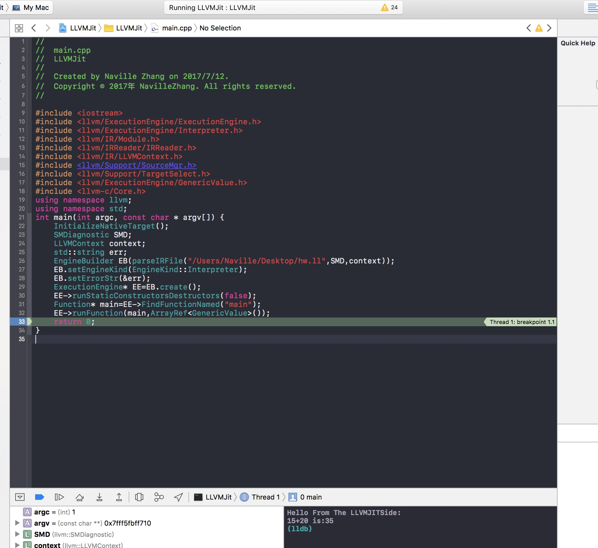

So recently I was researching a method regarding a better binary protection technique on iOS. Ideally VMProtect-like.
Introduction
Years ago I had the same thought, at that time lli was still very naive and has pretty limited support regarding platforms. However recently after seeing a dozen of Chinese “Mobile Application Security” companies claiming they can now run their clients’ code in a “VM”[1], I was thinking “How would I implement such a thing?” and “How is that possible?” because as we all know iOS has kernel policies in place to ensure JIT is not possible [2] so the implementation has to be interpretering.
I honestly doubt that those companies will design a completely new IR/BitCode format instead of using the LLVM-Style IR which is already part of the day to day build process and is currently [3] de facto industry standard. Now this whole theory reminds me lli. Now the LLVM JIT is being described as:
currently supports X86,
X86-64,ARM, AArch64, Mips, SystemZ, PowerPC, and PowerPC-64.
Searching Interpreter lands us at llvm/ExecutionEngine/Interpreter.h, which is a subclass of ExecutionEngineExecutionEngine has a constructor that takes a std::unique_ptr<Module> as an argument. If you’ve ever messed around with LLVM or read my previous beginner’s explanations, you would surely know that each TranslationUnit is represented using a Module, and Modules can be linked at the IR Level to form a bigger Module. For anyone missed it, here is the official description:
A Module instance is used to store all the information related to an LLVM module.
Modules are the top level container of all other LLVM Intermediate Representation (IR) objects. Each module directly contains a list of globals variables, a list of functions, a list of libraries (or other modules) this module depends on, a symbol table, and various data about the target’s characteristics.
A module maintains a GlobalValRefMap object that is used to hold all constant references to global variables in the module. When a global variable is destroyed, it should have no entries in the GlobalValueRefMap. The main container class for the LLVM Intermediate Representation.
Now our tasks seem to be clear:
- Compile whatever code we want to run into LLVM IR
- In our interpreter, deserialize IR and create Module->Create Execution Engine->Run
Code
clang -fobjc-arc -S -emit-llvm Input.c -o Input.ll
Our test code is:
1 | static int add(int a,int b){ |
And the interpreter goes as:
1 | // |
Run[4]
It failed miserably, logging out errors regarding failed external function calling, searching external function in http://llvm.org/docs/CMake.html brought us to
LLVM_ENABLE_FFI:BOOL
Indicates whether the LLVM Interpreter will be linked with the Foreign Function Interface library (libffi) in order to enable calling external functions. If the library or its headers are installed in a custom location, you can also set the variables FFI_INCLUDE_DIR and FFI_LIBRARY_DIR to the directories where ffi.h and libffi.so can be found, respectively. Defaults to OFF.
Compile LLVM again with-DLLVM_ENABLE_FFI=onand link to libFFI in your interpreter.Yikes
[5]
Limitations
It would be boring if it’s that easy to implement a interpreter. There are quite some limitations:
- Varadic external function is not supported.
printfin the aforementioned example is actually implemented by the Interpreter itself.We need to modify interpreter’scallFunctionto pass remaining data types all the way down to lib/ExecutionEngine/Interpreter/ExternalFunctions.cpp ‘sffiInvoketo add missing argument types - Structs are currently unsupported by
ExecutionEngineitself. - A large amount of system libraries, most notably
libOBJChas initialize routines that requires various native level stuff. LikelibOBJCinitialize runtime classes/SELs/etc by scanning special sections in the binary[6] - Performance impact would be huge
- GVs need to be mapped to native in order to be usable for native calls
Improvements
- Use our existing IR-Obfuscation techniques to make the IR unreadable even if the attacker managed to dump the IR
- Obfuscate the interpreter itself
- Compile to BitCode and mess around with the IntrinsicID table (or whatever it’s called) to make sure the attacker can not
llvm-disour BitCode even if he/she managed to dump it.
- 1.Yes because security is completely based on obscurity /s ↩
- 2.Detailed explanation is not my area and you should be able to find plenty of slides using a search engine ↩
- 3.In my humble opinion, that is ↩
- 4.Of course you also have to add library&header search path, mess around with linker settings. I personally linked all of them ↩
- 5.Yes I messed up the description string ↩
- 6.We can:
Implement our own libOBJC and ship it with the IRWon’t work due to native libraries not initialized in IR
Write LLVM Pass to leave native ObjC Runtime structs intact,throw original implementation into IR and replace with native briging function ↩